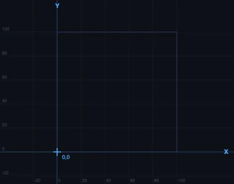

CNC G-Code Simulator Online — Write, Visualise, and Learn G-Code Without a Machine

- An online CNC G-code simulator lets you type a program and watch the tool path animate in the browser — no machine, no software, and no scrap material when you make a mistake.
- Four motion commands cover most 2D work: G00 (rapid positioning, no cut), G01 (linear cutting move at feed rate F), G02 (clockwise arc), and G03 (counter-clockwise arc).
- Use G90 for absolute coordinates (measured from program zero) and G91 for incremental (relative to current position); absolute is safer because one bad block does not cascade.
Teaching G-code programming without a CNC machine in the room is a frustrating experience for everyone. You write a program on the board. Students copy it down. You explain what each line does. And then — nothing. No moving tool, no visible path, no way to connect the code to the cut. The code exists in isolation from the thing it controls.
That was the problem driving the development of the CNC G-Code Simulator. Type the program, watch the tool path animate in real time. Make a mistake — wrong arc direction, missing feed rate, bad coordinate — and see exactly where the path goes wrong. No machine time wasted, no scrap material, no waiting for a lab slot.
G-Code in Plain Language — Four Commands That Do Most of the Work
There are hundreds of G-codes defined across various CNC standards, but the truth is that four motion commands cover the vast majority of what a student programmer will ever write. Master these four and you can describe almost any 2D tool path.
G00 — Rapid traverse. The tool moves at maximum machine speed to the specified coordinates. No cutting happens during G00 — this is purely a positioning move. Use it to get from the tool change position to the start of the cut, or to jump between features. Writing G00 X50 Y30 says "move as fast as possible to X=50, Y=30." Many programming errors come from using G00 where G01 was intended, sending the tool straight through the part at full speed.
G01 — Linear interpolation. The tool moves in a straight line at the programmed feed rate. This is your cutting command for straight profiles. G01 X100 Y0 F200 means "move linearly to X=100, Y=0 at a feed rate of 200 mm/min." The F value stays active until overridden, so you only need to specify it on the first cutting block.
G02 — Circular arc, clockwise. Cuts a curved path in the clockwise direction (as viewed from above on a standard mill). Requires the arc endpoint and either the I/J offsets to the arc centre or an R value for the radius. G02 X80 Y20 R30 cuts a clockwise arc to (80, 20) with a 30mm radius.
G03 — Circular arc, counter-clockwise. Same as G02 but CCW. The choice between G02 and G03 depends on which side of the arc the tool approaches from and which direction gives the correct cut.
Everything else — canned cycles, tool compensation, cutter offsets, coolant control — builds on top of these four. Get G00 through G03 solid and the rest follows naturally.

Absolute vs Incremental — Getting the Coordinates Right
One of the most common sources of confusion for new G-code programmers is the difference between absolute and incremental positioning. It's not complicated, but mixing the two up produces tool paths that look nothing like what was intended.
In G90 (absolute) mode, every coordinate is measured from the program zero point — usually the top-left or bottom-left corner of the workpiece. G01 X50 Y30 always means "the point at X=50, Y=30 from the origin," regardless of where the tool was before. This is the safer mode because an error in one block doesn't cascade into all subsequent positions.
In G91 (incremental) mode, coordinates are relative to the current tool position. G01 X10 Y5 means "move 10mm in the X direction and 5mm in Y from wherever I am now." Useful for repeating patterns, but dangerous if you lose track of the current position — every subsequent block is affected by any earlier error.
In the simulator, you can switch between G90 and G91 mid-program and watch how the path changes. That live comparison makes the distinction immediately clear in a way that a written explanation rarely achieves.
Writing a Simple Program — Step by Step
Here's a complete, working G-code program that cuts a 60mm × 40mm rectangle with the tool starting and finishing at the origin. Try entering this exactly into the simulator:
%
O0001 (RECTANGULAR PROFILE)
G21 G90 G17 (metric, absolute, XY plane)
G00 Z5 (rapid to safe height)
G00 X0 Y0 (rapid to start corner)
G01 Z-2 F100 (plunge to cutting depth)
G01 X60 F200 (cut along bottom edge)
G01 Y40 (cut up right side)
G01 X0 (cut along top edge)
G01 Y0 (cut down left side, back to start)
G00 Z5 (retract to safe height)
M30 (end of program)
%Read through it before you run it. Every line should make sense. G21 sets metric units. G90 sets absolute coordinates. The first G00 positions the tool at safe height. The G01 Z-2 plunges to 2mm depth at a controlled rate. The four linear moves cut the rectangle. Then retract and stop.
Run it in the simulator. Watch the path. Check each move against the code. Then try modifying it — change the rectangle to 80mm × 50mm, or add a G02 arc at each corner to create a rounded profile. That kind of active modification builds programming intuition faster than any amount of passive reading.
Common Errors — What the Simulator Catches That the Machine Wouldn't
On a physical CNC machine, programming errors tend to reveal themselves expensively. A missing F word leaves the feed rate undefined. A G00 where G01 was intended sends the tool ploughing through the part at rapid speed. A wrong arc direction cuts the wrong side of the curve. These are all real mistakes that happen regularly in training environments.
The simulator catches most of them visually before anything is cut. A G00 move that should be a G01 shows up as a dashed rapid line crossing through the intended cut boundary — immediately obvious on screen. An arc in the wrong direction produces a path that visibly doesn't match the intended profile. A missing feed rate won't crash a real spindle, but the simulator will flag it before the first cut move executes.
Some errors it won't catch — gouge analysis, tool radius compensation collisions, realistic material removal. For those you need dedicated CAM simulation software. But for learning the fundamentals of G-code structure and tool path logic, the browser-based simulator is more than sufficient and has the decisive advantage of being instant and free.
Teaching G-Code with the Simulator — What Works in the Classroom
The most effective approach I've found is not to teach commands first. Start by loading a pre-written program into the simulator and running the animation. Students watch the tool path complete a full profile — maybe a simple shape, maybe a contour with both linear and arc moves. Then ask them to read the code and identify which lines correspond to which moves on screen.
This reversal — see the output, then decode the input — is far more engaging than teaching syntax first. By the time you get to formally explaining G01, students already have a mental model of what it does. The syntax becomes a label for something they've already observed rather than an abstract definition to memorise.
From there, give them a shape and ask them to write the program. Not a complex shape — a chamfered rectangle, a simple slot, a profile with one arc — but something where they have to make decisions about coordinate sequences and arc directions. Run each attempt in the simulator. Errors are immediate and visible. Corrections can be made in seconds. Three or four iterations of this in a single session is enough to build real programming confidence.
For students who want to extend into the physical machine world, the Lathe Machine and Milling Machine simulators cover parts identification, operation types, and cutting parameter selection — good context for where the G-code you've written actually runs.
Try It Yourself
- CNC G-Code Simulator — Write and visualise G-code tool paths with animated tool movement. G00, G01, G02, G03, with step-by-step block highlighting and coordinate readout.
- Lathe Machine Simulator — Centre lathe parts identification, turning, facing, and threading operations — understand the machine context for CNC turning programs.
- Milling Machine Simulator — End mill, face mill, and slot drill operations with cutting speed, feed per tooth, material removal rate, and power calculation.
Key Takeaways
- Four commands do most of the work: G00 (rapid positioning), G01 (linear cutting move), G02 (clockwise arc), G03 (counter-clockwise arc). Master these before anything else.
- G90 is absolute positioning — all coordinates from the program origin. G91 is incremental — coordinates from the current tool position. Absolute mode is safer for most programs.
- The F word sets the cutting feed rate in mm/min (G21 metric) — always required before the first G01 or arc move. Missing it leaves the feed undefined.
- G00 moves are rapid — no cutting. Using G00 where G01 was intended is one of the most common and dangerous programming errors.
- I, J define the arc centre offset from the arc start point for G02/G03. Alternatively use R for the radius — simpler, but ambiguous for arcs over 180°.
- Teaching G-code by running a complete program first — then decoding it — builds intuition faster than teaching commands in isolation.
Frequently Asked Questions
What are the most important G-code commands for beginners?
G00 (rapid positioning), G01 (linear cutting), G02 (CW arc), G03 (CCW arc). These four motion commands describe almost any 2D tool path. Supporting commands include G20/G21 (inch/metric), G90/G91 (absolute/incremental), and M03/M05 (spindle control).
What is the difference between G00 and G01?
G00 is a rapid traverse — maximum speed, no cutting. G01 is a linear cutting move at the programmed feed rate (F value). Always use G00 for air moves and G01 for cutting moves. Confusing the two is one of the most common and dangerous programming errors.
What do I and J mean in G02 and G03?
I is the X offset and J is the Y offset from the arc start point to the arc centre. Alternatively, use R to specify the arc radius directly — simpler for most arcs, but ambiguous for arcs over 180 degrees.
Can I learn G-code without a CNC machine?
Yes. A browser-based G-code simulator lets you write programs and watch the tool path animate without any hardware. The NHIT VisualLab CNC G-Code Simulator runs in any browser — no software to install, no machine needed, no scrap material when you make a mistake.
What is absolute vs incremental positioning in G-code?
G90 (absolute): all coordinates measured from the program origin. G91 (incremental): coordinates relative to the current tool position. Absolute is safer — a single block error doesn't cascade into all subsequent moves. Switch between them in the simulator to see the difference visually.
G-code programming is a practical skill that benefits enormously from rapid feedback — you write something, you see what it does, you fix it. A physical CNC machine provides that feedback slowly and expensively. A simulator provides it instantly and for free. The concepts are the same; the learning curve is much shorter. Start with the four motion commands, write a simple profile, and iterate from there. The machine will behave exactly as the simulator predicts — because that's what the simulator was built to show.